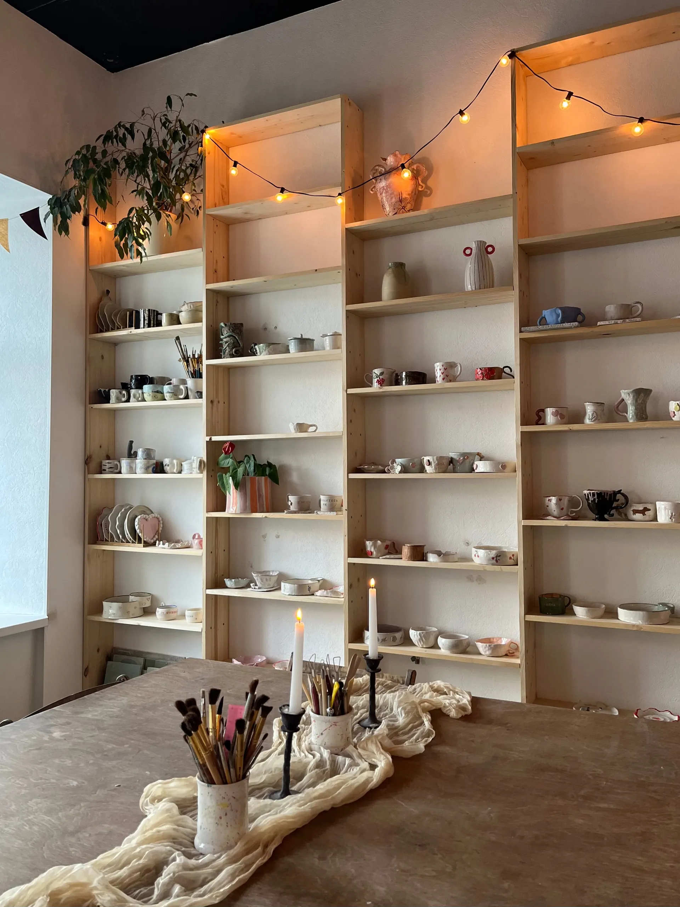
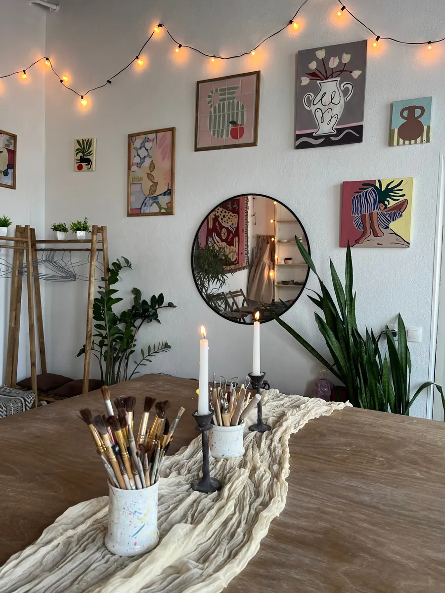
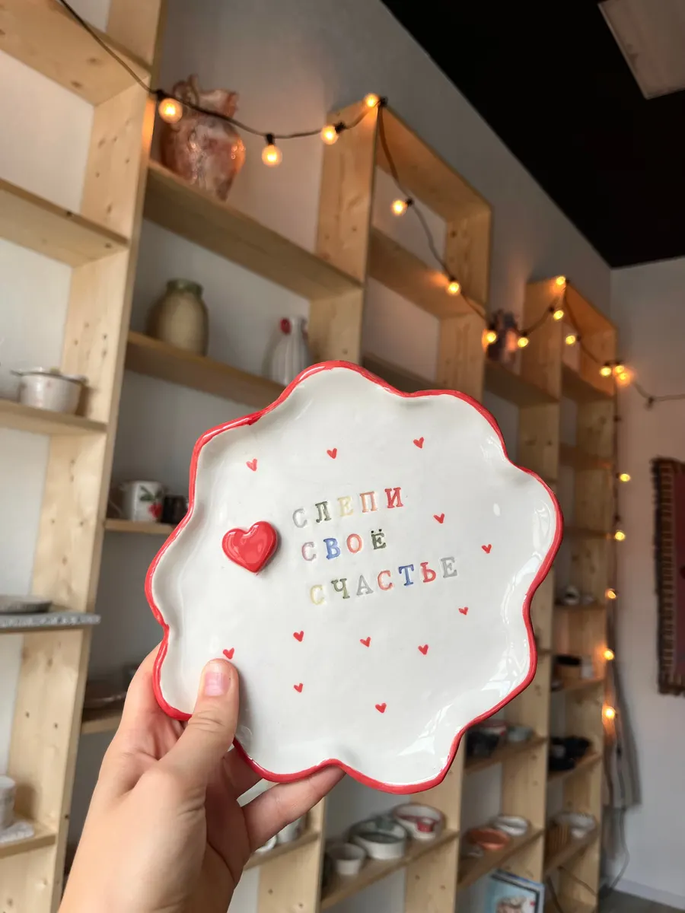
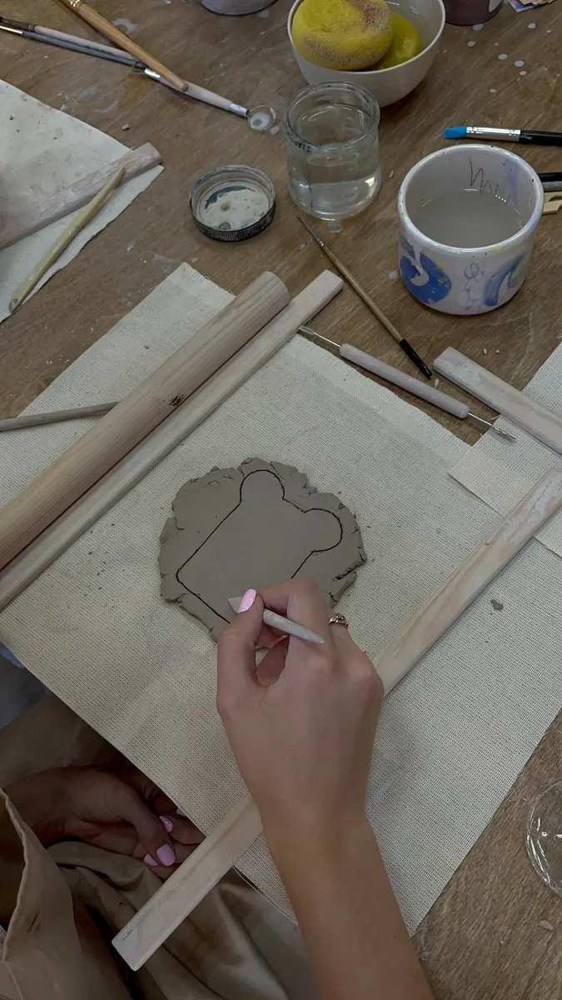

Гончарная мастерская · Рязань
Гончарные мастер-классы в Рязани – цена до записи
Гончарный круг, ручная лепка, ковровая вышивка и живопись. Выбираете формат, день и время – и пишете нам в мессенджер.
- Дети и взрослые, группой, вдвоём или в одиночку
- Подарочный сертификат на любой мастер-класс
- Ежедневно с 11:00 до 21:00

Что можно выбрать
Входит
- Гончарный круг – ровные округлые изделия
- Ручная лепка – кружки, тарелки, миски, вазы, подсвечники
- Ковровая вышивка – пушистый коврик, забрать можно сразу
- Живопись – маслом, акрилом, пейзаж, натюрморт или свободная тема
Отдельно, если нужно
- Гончарное свидание – только вы и мастер
- Праздник в мастерской – день рождения или корпоратив
- Подарочный сертификат на любой формат
Цена названа до записи
Цена указана за мастер-класс. Подарочный сертификат подойдёт на любой формат и любое количество человек.
Мастер-классы
- Гончарный круг2 часа2 100 ₽
- Ручная лепкакружки, тарелки, миски, вазы, подсвечники1 700 ₽
- Ковровая вышивка2 часа, коврик можно забрать сразу1 300 ₽
- Живопись и рисованиемаслом, акрилом, на свободную тему1 500 ₽
Свидание, праздник, подарок
- Гончарное свиданиеиндивидуально, при свечах, 2 часа4 200 ₽
- Праздник в мастерскойдень рождения, свидание, корпоратив, 2 часа1 700 ₽
- Подарочный сертификатбумажный или электронный, 2 часа1 700 ₽
Цены взяты с карточки на Яндекс.Картах. Групповой и индивидуальный формат, а также количество человек уточняйте при записи. Предоплата, наличные или банковский перевод.
Как проходит запись
- 01
Выбираете формат
Круг, лепка, вышивка, живопись или свидание вдвоём.
- 02
Выбираете день и время
Ниже – онлайн-запись: услуга, день, время.
- 03
Пишете нам в мессенджер
Сообщение уже набрано: останется отправить.
- 04
Лепите и расписываете
Мастер показывает этапы и помогает на каждом.
- 05
Забираете изделие после обжига
Готовое изделие можно забрать позже, после обжига.



Что вас ждёт
Для детей и взрослых
Малыши, подростки и взрослые: групповые занятия, для двоих или компанией друзей.
Мастер рядом на каждом этапе
В отзывах гости пишут, что мастер объясняет и помогает на каждом шаге.
Подарочный сертификат
Бумажный или электронный, на любой формат мастер-класса.
Можно с собакой
В мастерскую разрешено приходить с животными.
Отзывы с Яндекс.Карт
«Совершенно случайно открыли для себя эту волшебную студию. Просто увидели вывеску и предложили ребёнку сходить попробовать. Студия чистая, светлая, в ней какая то прям добрая атмосфера.»
Катерина Ш. · 5 июня 2025
«Уютное место для творчества! Понравилось, что есть разные форматы мастер классов, как групповые, для двоих или можно собраться с подружками своей компанией. Приятные девочки мастерицы, которые всегда помогут»
Ольга Кирюхина · 20 марта
«Мама всегда мечтала попробовать поработать на гончарном круге и сегодня она исполнила свою мечту! Обязательно вернемся еще, это был незабываемый опыт»
dani · 13 декабря 2025
Отзывы с карточки на Яндекс.Картах, без правок.
Частые вопросы
Нужен ли опыт?
Нет. В отзывах гости пишут, что приходили впервые, а мастер всё показывал и объяснял по этапам.
Можно ли прийти с ребёнком?
Да, по карточке мастерской принимают малышей, подростков, детей и взрослых.
Когда можно забрать изделие?
После обжига. Точный срок уточните у мастера при записи.
Как оплатить?
Предоплатой, наличными или банковским переводом.
Запись на ближайшую неделю
- Адрес
- Почтовая ул., 59, Рязань
- Часы
- ежедневно 11:00–21:00, по записи
- Телефон
- +7 (900) 970-01-96